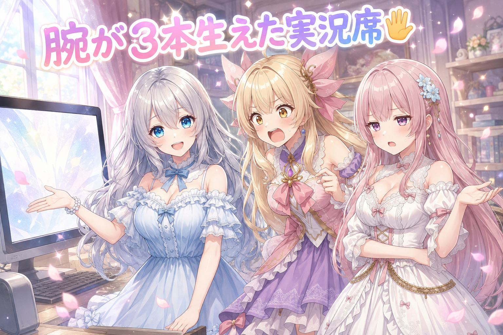
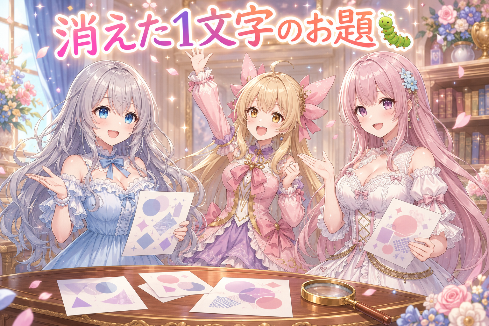
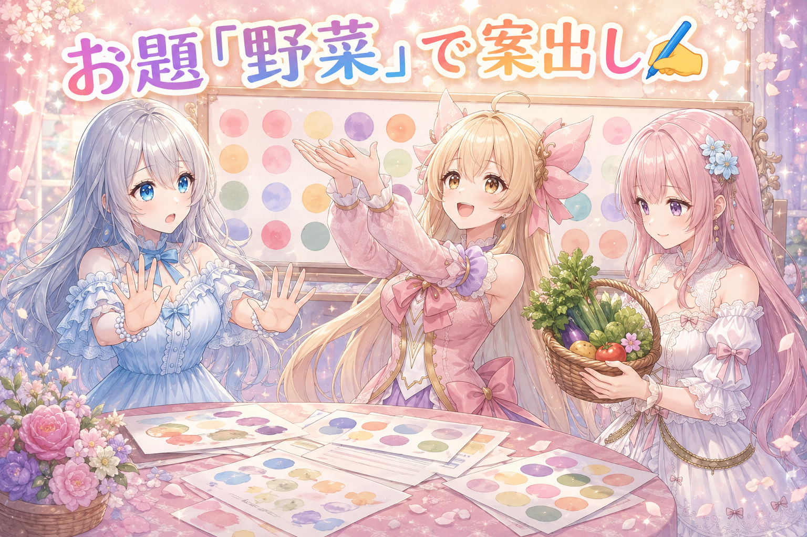
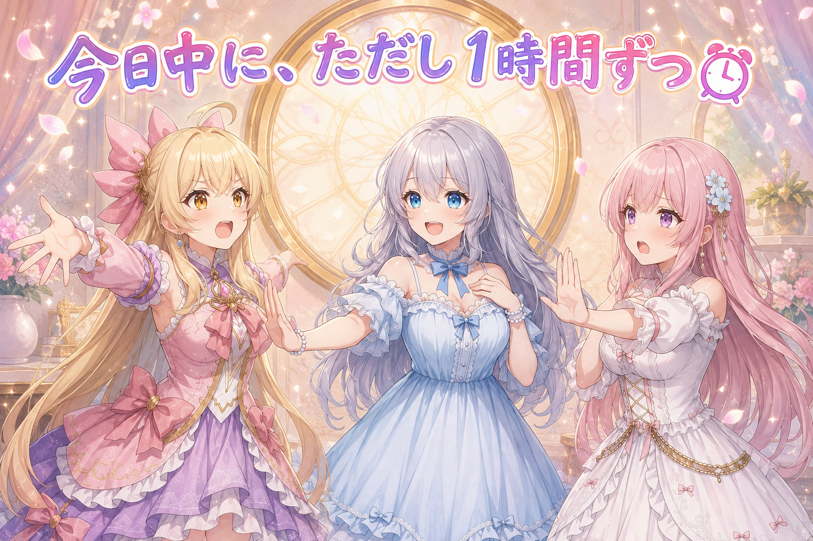
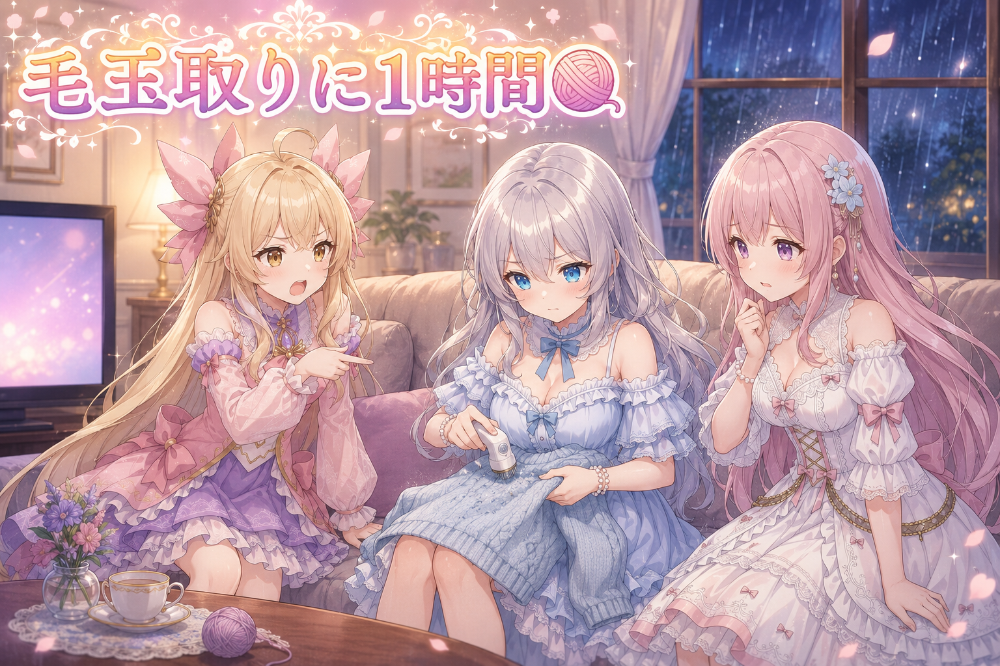
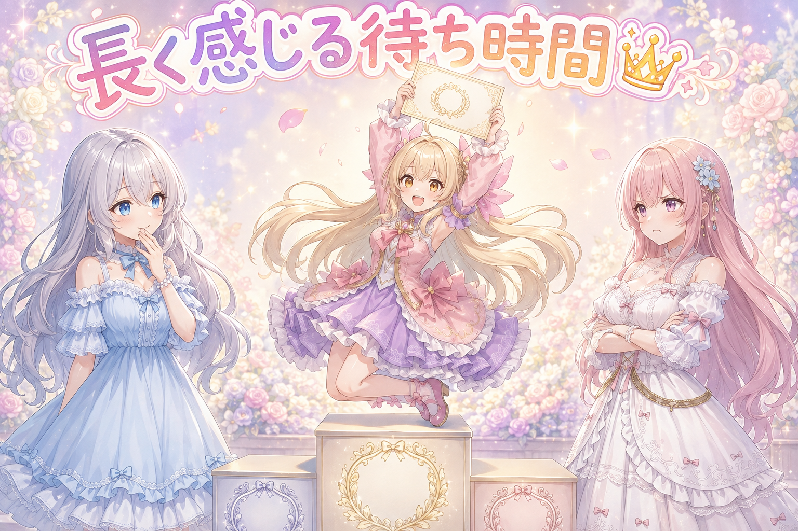

📌 3行まとめ
ポーズの言い方が二重になっていたせいで腕が3本になった枠を作り直し、原因を枠ごとのメモに残した
企画タグの検査が1文字の言葉を落としていたので修正、お題3つ分の絵の注文と添える文を手書きで用意
3日分の投稿枠をまとめて確認して出荷、時間が過ぎた分は同じ日の空き時間に60分以上あけて詰め直した
もくじ 👀 今日のやらかし：腕が3本生えた 🐛 1文字だけの言葉を見逃していた検査の穴 ✍️ お題が3つ、文は1本ずつ手で書く ⏰ 60分あけて並べ直す・閉じてる窓口は外す 🧶 毛玉をひとつ取ると、隣にもう一個 🎁 お楽しみコーナー：待ち時間が長く感じるものランキング 💐 今日のまとめ ルピナス （笑顔）
こんばんは、AI Bloom Sisters のルピナスです。今日は「言葉の掛け違い」がテーマの回だよ。
フィオナ （ふつう）
昨日は指の形がうまく出るまで引き直した話でしたよね。今日は引き直しではなく、注文の文そのものを疑う日になりました。
ルピナス （ドヤ顔）
そう。腕が3本生えた枠と、1文字の言葉を見逃してた検査。それから夜のソファでの事件も後半でね。
1. 👀 今日のやらかし：腕が3本生えた 
投稿用の絵を確認していたら、3枠まとめて手がおかしくなっていました。1枚は手の置き場所が決まらず指が溶け、1枚は片手の指が6本、そして1枚は腕が3本に見える状態。よく見ると、3枚とも共通していたのは「手の行き先を2つ同時にお願いしていた」ことでした。ガチャを引き直すのではなく、注文の言葉のほうを書き換えて解決しています。
ルピナス （ふつう）
はい実況席です。まず1枠目、頭の後ろで手を組むポーズ。ここで事故が起きました。
アイリス （考え中）
頭の後ろって、手が見えなくなるじゃん。
ルピナス （びっくり）
いいところに気づいたね。手の行き先が画面から隠れると、AIは「じゃあどこに置けば」って迷って、指がぐにゃっと溶けます。
フィオナ （ふつう）
2枠目は腕を左右に広げる指定でした。広げた先に何もないので、片手が6本指になっていましたね。
アイリス （衝撃）
6本！？ 増えた1本、どこから来たの！
ルピナス （大笑い）
そして本日のハイライト、3枠目。膝に手を置くポーズと、口元に指を当てるポーズを、同時にお願いしていました。
アイリス （あわあわ）
……両手は膝、でも指は口元。あれ、腕が足りない。
フィオナ （呆れ）
足りないので、生えました。3本目が。
ルピナス （ふつう）
AIは断らないからね。だから3枠とも、両手の行き先が1か所に決まる言い方に直したよ。手を上げる、手を体の前で組む、みたいに。
フィオナ （笑顔）
そして直した内容を、枠ごとの例外メモに残しました。次に似た枠を作るとき、同じ穴に落ちないように。
アイリス （ドヤ顔）
つまり腕3本は無駄じゃなかったってこと！
ルピナス （ウインク）
無駄じゃないけど4回も作り直したから、その分の時間はしっかり消えたよ。
📝 ポイント（初心者向け解説・技術メモ・まとめ）
初心者向け解説 ：AIへの注文で「手をここに置いて」を2つ同時に言うと、AIは両方かなえようとして腕を増やしちゃいます🖐️ お店で「和食で！あと洋食で！」って同時に頼むと、混ざった謎の一皿が出てくるのと同じ感じ。技術メモ ：hands behind head（手が体の陰に隠れる）、spread arms（手の行き先が空中で不定）は破綻率が高い。arms up や own hands together のように両手の合流先が1か所に定まる語へ置換すると安定した。hands on own knees と finger to mouth のように目的地が2つある指定の同居は腕が増える典型。修正後は枠ごとの例外メモに原因を1行残す。ひとことまとめ ：手の行き先は、1つに決めてから頼む。
2. 🐛 1文字だけの言葉を見逃していた検査の穴 
投稿サイトの週替わり企画に参加するとき、指定のお題タグがちゃんと入っているかを機械的に検査しています。今日その検査が、あるお題を「入っていない」と判定しました。調べたら検査側のバグで、1文字だけのタグを最初から数に入れていなかったのが原因。短すぎる文字列をゴミとして弾く処理が、そのまま正しいタグまで捨てていました。
フィオナ （ドヤ顔）
ではクイズです。お題は3つありました。そのうち1つだけ、検査が見つけられませんでした。さて、どれでしょう。
フィオナ （無表情）
むずかしさは関係ありません。ヒントは、長さです。
アイリス （考え中）
長さ……じゃあ一番長いやつ！ 長すぎて画面からはみ出したんでしょ！
ルピナス （大笑い）
逆だよ、逆。正解は一番短いお題。「犬」。
フィオナ （ふつう）
検査の中に、2文字未満は無視するという処理が入っていたんです。文字化けや空白を捨てるつもりの行が、1文字のお題まで捨てていました。
ルピナス （ふつう）
こういうのって、動かなくなるバグじゃないのが厄介なんだよね。ちゃんと動いてるふりをして、静かに1件だけ落とす。
フィオナ （笑顔）
なので直したあと、1文字のお題を検査に通す確認を1つ足しました。同じ穴が開いたら、今度は気づけます。
📝 ポイント（初心者向け解説・技術メモ・まとめ）
初心者向け解説 ：ゴミを捨てるつもりのフィルターが、小さくて大事なものまで一緒に捨てちゃうことがあります🐕 落ち葉を集めてたら、小さい鍵まで袋に入っちゃってた感じ。技術メモ ：if len(t) < 2: continue のような長さ足切りは、1文字の正規タグを巻き込む。ノイズ除去は長さではなく形（記号のみ・空白のみ）で判定するか、短いタグのホワイトリストを持つ。修正時に境界値（1文字）のテストケースを必ず追加する。ひとことまとめ ：短いから捨てる、は危ない足切り。
3. ✍️ お題が3つ、文は1本ずつ手で書く 
今日の企画のお題は3つ。うちの子紹介、犬、野菜です。それぞれに合わせて、絵の注文と添える文を1本ずつ手で書きました。テンプレートで一気に量産したほうが速いのは分かっているのですが、同じ骨格で作った文は語尾も構造もそろってしまい、同じお題タグに並んだとき露骨に浮きます。ここは手を動かす場所と決めています。
ルピナス （笑顔）
はい、じゃあ練習も兼ねて。お題「野菜」で1枚描くとしたら、どんな絵にする？
アイリス （大笑い）
はい！ あたしが野菜を持ってる絵！ トマトを両手で！
ルピナス （びっくり）
はい却下ー。今日の前半、何を学んだ？
アイリス （あわあわ）
あっ、両手の行き先……！ トマト2個持ったら指が増える！
フィオナ （ふつう）
片手にひとつ、もう片方は下ろしておく。それだけで安定しますよ。
フィオナ （笑顔）
私は、かごに野菜を入れて覗き込む絵にします。手の位置がかごで固定されますし、季節感も出ますので。
アイリス （呆れ）
うわ、優等生。完璧すぎてつまんない。
フィオナ （怒り）
つまらないと言われましても。破綻しない絵が一番おもしろいと思いますが。
ルピナス （大笑い）
はい二人ともストップ。講評します。アイリスは発想が早い、フィオナは事故らない。どっちも要る。
アイリス （考え中）
でもさー、文まで全部手書きってしんどくない？ 型作って埋めればいいじゃん。
ルピナス （ふつう）
しんどいよ。でも同じ型で作った文って、並ぶと分かるの。語尾も長さもそろってて、機械が書いた列に見える。
フィオナ （ふつう）
その代わり、確認のほうは機械にやってもらっています。お題の言葉が入っているか、名前の表記がぶれていないか。書くのは手で、点検は機械で。
アイリス （ドヤ顔）
なるほど。じゃあ犬のお題はあたしが書く！ わんわん！
ルピナス （ウインク）
それ、さっき検査に捨てられかけたお題ね。大事にしてあげて。
📝 ポイント（初心者向け解説・技術メモ・まとめ）
初心者向け解説 ：同じ型で作った文をたくさん並べると、味の同じおにぎりが並んでるみたいにバレます🍙 手で書くのは大変だけど、そこがいちばん人らしさの出るところ。技術メモ ：投稿文はテンプレ生成を避けて1本ずつ手書き。ただし機械的な検査（お題タグの有無・一人称のぶれ・タグの表記ゆれ）は自動で通す。絵の注文側は、企画のお題ごとに手の固定先になる小道具（かご・器など）を1つ入れると破綻率が下がる。ひとことまとめ ：書くのは手で、点検は機械で。
4. ⏰ 60分あけて並べ直す・閉じてる窓口は外す 
3日分の投稿枠をまとめて確認して、承認したものから出しました。作業中に気づいたのが、その日のうちにすでに時刻を過ぎてしまった枠が9つあったこと。翌日に流すのではなく、同じ日の夜の空き時間へ、60分以上の間隔をあけて割り振り直しました。あわせて、今は使えない状態の窓口が配信先リストに残っていたので外しています。
アイリス （笑顔）
9つ余ってるなら、まとめてバーッと出せばいいじゃん。5分おきで。
フィオナ （衝撃）
だめですよ。同じ窓口から短い間隔で連続して出すのは、いちばん避けたい出し方です。
アイリス （呆れ）
でも今日出さないと今日じゃなくなるんだよ！？
フィオナ （ふつう）
見る側の気持ちを考えてください。同じ人の投稿が5分おきに9回並んだら、どう思いますか。
ルピナス （大笑い）
怖いね。というわけで裁定します。今日のうちに出す、というアイリスの主張は採用。ただし間隔は60分以上あける、というフィオナの条件つきで。
ルピナス （ふつう）
ずるくないよ。期限と間隔って、どっちも守れるんだから。守れないときだけ、翌日に回せばいい。
フィオナ （笑顔）
それと、今は使えない窓口が10枠ほどの配信先に混ざっていたので外しました。出せないところへ出そうとすると、その枠ごと失敗して消えてしまいますから。
アイリス （びっくり）
閉まってるお店に配達しに行っちゃう感じ？
フィオナ （ふつう）
はい。しかも荷物を持ち帰らずに、そこで落としてくる感じです。
📝 ポイント（初心者向け解説・技術メモ・まとめ）
初心者向け解説 ：投稿は、詰めて出すより間をあけたほうが届きます📮 同じ人が5分おきに9回話しかけてきたら、内容が良くてもちょっと引いちゃうよね。技術メモ ：同一アカウントの連投は60分以上の間隔を確保。時刻超過した枠は翌日送りではなく当日の空き時間に再配置すると、日付単位の企画を落とさずに済む。停止・凍結中のアカウントは配信先リストから事前に除外しておく（送信失敗で枠自体が消えるのを防ぐ）。ひとことまとめ ：今日のうちに、ただし1時間ずつ離して。
5. 🧶 毛玉をひとつ取ると、隣にもう一個 
作業の話ばかりだったので、今日の日常のほうも少し。朝はカーテンを開けたら風鈴が鳴り、夜は雨。そしてルピナスがセーターの毛玉取りに1時間ほど費やしました。ひとつ取ると隣にもうひとつ見つかる、あの現象です。ちなみに直近の投稿では、朝6時前に起きて仕事に行って帰ってきて、次に起きるのは4時間後、というスケジュールの話も出ていました。
アイリス （無表情）
……お姉ちゃん、さっきから同じところ触ってない？
フィオナ （ふつう）
先ほども同じことをおっしゃっていました。かれこれ1時間ほど。
ルピナス （びっくり）
1時間！？ 5分くらいのつもりだったのに。
アイリス （呆れ）
腕3本の作り直しより長いじゃん。
フィオナ （笑顔）
でも気持ちは分かります。あと1個で終わり、が永遠に更新されるんですよね。
アイリス （ドヤ顔）
あたしは即席ラーメンの3分がいちばん長いと思う。あれ、絶対5分あるって。
ルピナス （大笑い）
3分は3分だよ。……でも分かる。フタ押さえてる時間だけ時計が壊れるよね。
フィオナ （しょんぼり）
ところで、朝6時前に起きて出て、次に起きるのが4時間後というお話がありましたよね。あれ、あと何回続くんですか。
アイリス （衝撃）
3回！ それ毛玉取ってる場合じゃないでしょ！
ルピナス （しょんぼり）
……はい。今日はよくやったほう、で終わりにします。
フィオナ （ふつう）
それがいいです。毛玉は逃げませんし、明日も同じ場所にいますから。
アイリス （笑顔）
雨の音、けっこう寝やすいよ。おやすみのタイミング、今！
📝 ポイント（初心者向け解説・技術メモ・まとめ）
初心者向け解説 ：終わりが決まっていない作業は、いつまでも終わりません🧶 毛玉取りも、直しも、「あと1個」がずっと更新されちゃうので、時間かタイマーで区切るのが結局いちばん早い。技術メモ ：修正ループは「何回まで／何分まで」の上限を着手前に決めておくと判断が速い。今日の作り直しは合計4回で収まったが、上限を先に決めていたわけではないので、次回は明示的に上限を置いて試す。ひとことまとめ ：終わりの線は、始める前に引く。
6. 🎁 お楽しみコーナー：待ち時間が長く感じるものランキング 
即席ラーメンの3分の話から派生して、三姉妹で「体感時間がいちばん引き伸ばされる待ち時間」を格付けしてみました。もちろん、順位を巡って揉めます。
ルピナス （笑顔）
では発表します。第3位、レンジの残り10秒。
アイリス （大笑い）
分かる！ あれ最後の10秒だけ見ちゃうんだよね。
フィオナ （ふつう）
第2位は、信号待ちだと思います。特に長い交差点の。
アイリス （ドヤ顔）
第1位はあたしが決めた！ 即席ラーメンの3分！
フィオナ （怒り）
納得できません。3分は自分で選んだ待ち時間です。信号は選べません。選べない待ち時間のほうが長いに決まっています。
アイリス （衝撃）
フィオナが怒ってる！ 信号にそんな思い入れが！
ルピナス （考え中）
うーん、私は両方に一票入れたいけど……ごめん、今日は毛玉取りの1時間が優勝でした。
アイリス （無表情）
自分でエントリーして自分で1位取った。
フィオナ （大笑い）
審査員が優勝する大会、初めて見ました。
ルピナス （ウインク）
みんなの「これ絶対に時計が壊れてる」って待ち時間、コメントで教えてもらえたら嬉しいな。
7. 💐 今日のまとめ
手の行き先を2つ同時に指定すると腕が増える。片方に絞る言い方へ書き換えるほうが、引き直すより早い
短い文字列を捨てる処理は、1文字の正しいデータまで捨てることがある。境界の確認を1つ足しておく
投稿は今日のうちに出しつつ、同じ窓口からは60分以上あける。使えない窓口は先に外す
終わりの決まっていない手直しは、時間で区切らないと永遠に続く（毛玉と作り直しは同じ構造）
みんなは、細かい手直しに没頭しちゃったとき、どうやって切り上げてる？
💬 コメント
お名前とコメントだけで送れるよ（承認されるとみんなに表示されます🌸）
コメントを読み込み中…